DIGITAL
PRDUITS
DESIGN
<CODE>
$ cd Abidjan && npm run dev


Compétences & expertise
Gestion de projets et coordination multi-équipes
Je planifie, coordonne et pilote les projets digitaux de bout en bout : cadrage des besoins, organisation des équipes, suivi des délais et communication avec les parties prenantes.
Plateforme SaaS — gestion des candidats d’auto-école
Application web complète de suivi des candidatures et des examens pratiques, avec tableau de bord, statistiques et gestion des utilisateurs.
Coordination de production — 7Greens Films
Planification des productions, supervision des équipes techniques et artistiques, suivi des avancements et gestion des incidents en tournage.
Déploiement & coordination technique — PROSUMA
Coordination des installations sur site, déploiement du système d’encaissement, gestion des incidents et accompagnement des utilisateurs.
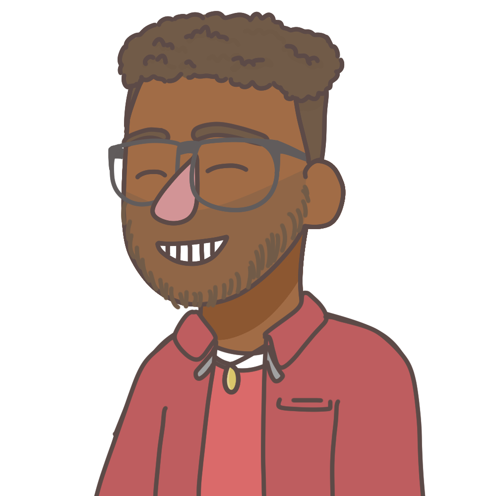
Formation & développement des compétences
Je forme et accompagne les utilisateurs et les équipes pour qu’ils maîtrisent pleinement les outils et les systèmes, avec des supports clairs et un suivi personnalisé.
Formation des utilisateurs — système d’encaissement (PROSUMA)
Prise en main du système, formation aux contrôles quotidiens et accompagnement après mise en service.
Ateliers de montée en compétences — développement web
Sessions pratiques sur les technologies web (HTML, CSS, JavaScript, React) pour renforcer l’autonomie des équipes.
Documentation & guides utilisateurs
Rédaction de guides clairs et de procédures pour faciliter l’adoption des outils numériques.
Leadership & supervision d’équipes
Je supervise et coordonne les équipes techniques et artistiques : répartition des tâches, revue de code, accompagnement et maintien de la qualité.
Supervision des équipes de production — 7Greens Films
Encadrement des équipes techniques et artistiques, répartition des tâches et suivi quotidien des avancements.
Revue de code & bonnes pratiques — projets web
Validation des livraisons, revue de code et définition des standards pour maintenir la qualité.
Mentorat des développeurs juniors
Accompagnement des profils juniors : architecture, méthodes agiles et autonomie progressive.
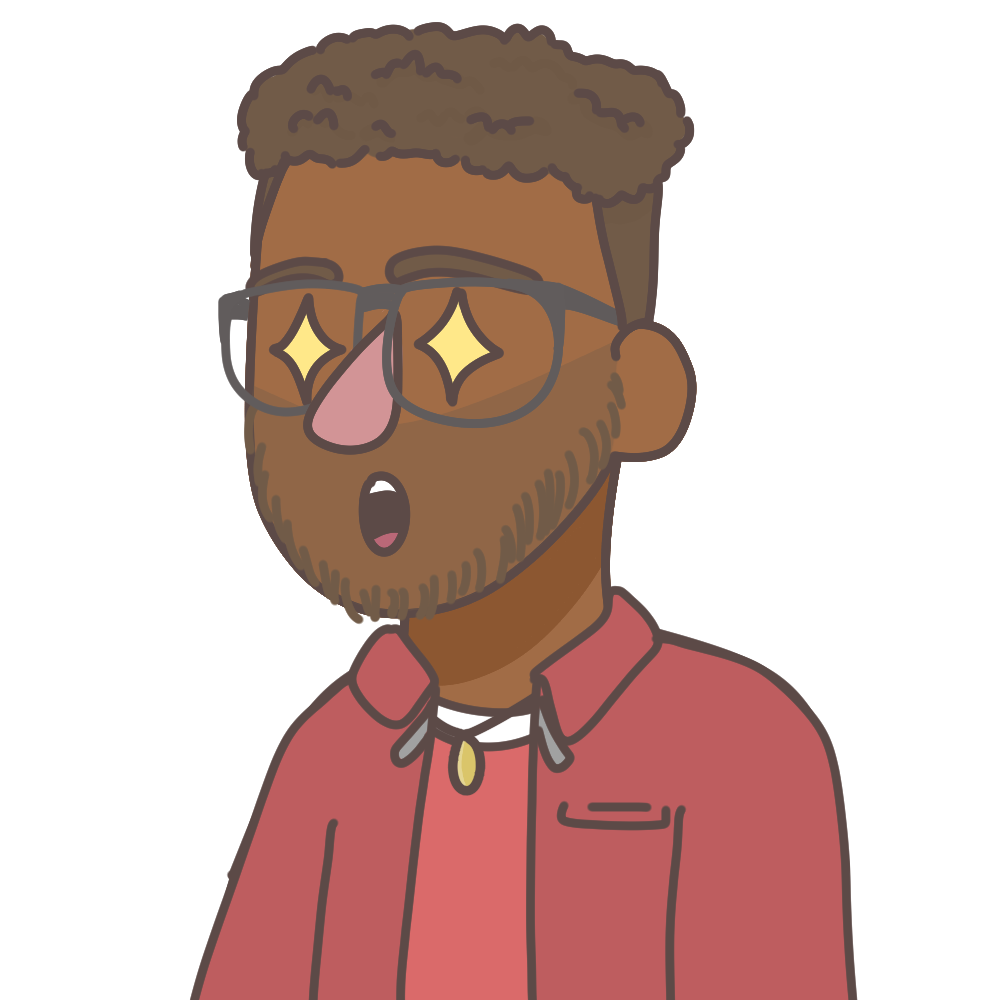
Analyse, reporting & pilotage opérationnel
Je construis des tableaux de bord et des indicateurs pour piloter l’activité : suivi des performances, reporting régulier et aide à la décision.
Reporting des incidents — support PROSUMA
Suivi des incidents, analyse des causes et reporting régulier aux responsables.
Tableaux de bord Power BI — pilotage d’activité
Création de dashboards pour suivre les performances et orienter les décisions.
Suivi des avancements — productions 7Greens
Mise en place d’un suivi visuel des avancements et des points de blocage.
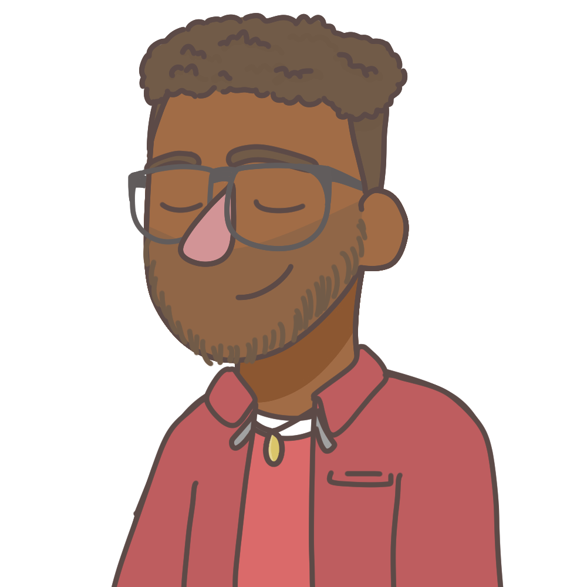
Analyse & visualisation de données
Je transforme les données brutes en informations exploitables : requêtes, modélisation et visualisations claires et actionnables.
Modélisation de données — plateforme auto-école
Conception des modèles de données et requêtes pour le suivi des candidats et des examens.
Visualisations Power BI — indicateurs de performance
Graphiques et tableaux de bord pour rendre les données compréhensibles.
Extraction & analyse — systèmes d’encaissement
Requêtes SQL et agrégations pour analyser les volumes et les tendances.
Automatisation & amélioration continue
J’automatise les tâches répétitives et j’intègre l’IA pour gagner en fiabilité : scripts, contrôles automatisés et amélioration continue.
Automatisation des contrôles — caisse PROSUMA
Scripts d’automatisation des tâches de maintenance et de contrôle des performances.
Intégration d’outils IA — Claude & Gemini
Utilisation de l’IA dans les workflows de développement et de support.
Versioning & collaboration — Git/GitHub
Mise en place de la gestion de versions pour sécuriser et fluidifier les livraisons.
Développement d’applications web
Je conçois et développe des applications web complètes : interfaces, API, bases de données, jusqu’à la mise en ligne.
Plateforme SaaS — gestion des candidats d’auto-école
Développement full-stack (React, Node.js, Express, MongoDB) avec tableau de bord et statistiques.
Sites vitrines — SITEC & Consult’
Création de sites web sur mesure adaptés aux besoins des clients.
Application de fidélité — Fidélité
Développement d’une application de fidélité avec gestion des récompenses.
Design & montage
Je conçois des maquettes et des identités visuelles claires : Figma, Adobe XD, Canva, du logo à l’interface complète.
Maquettes UI/UX — projets web
Wireframes et prototypes interactifs pour valider l’expérience utilisateur.
Identité visuelle & logo — branding
Création de logos et d’identités visuelles cohérentes et mémorables.
Supports graphiques & montage — Canva
Création de supports de communication et montage vidéo.
Base de données
Je conçois et administre les bases de données : schémas relationnels, requêtes optimisées et modélisation NoSQL.
Schéma relationnel — plateforme auto-école
Conception de la base MySQL (3NF) pour les candidats, les examens et les paiements.
Modélisation NoSQL — MongoDB
Structures flexibles pour les données non structurées des applications web.
Optimisation des requêtes & sauvegardes
Indexation, requêtes efficaces et stratégies de sauvegarde des données.
Un parcours orienté terrain & résultats
Développeur Free-lance
Depuis 2020 — applications web sur mesure. Conception et développement d’applications web. Maquettes UI/UX et interfaces utilisateur. Correction de bugs et améliorations digitales.
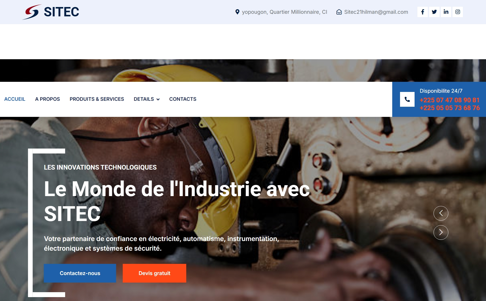
Voir le projet →Sites & applications web sur mesure
Conception de sites et d’applications adaptés aux besoins clients : SITEC, Consult’, solutions de sécurité et de gestion.
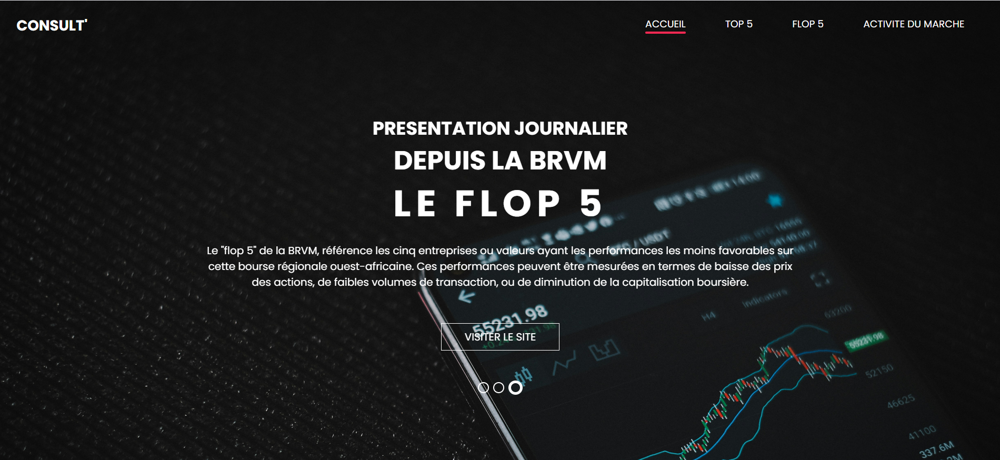
Voir le projet →Coordination de productions & plannings
7Greens Films Productions — élaboration des plannings, supervision des équipes techniques et suivi des avancements.
Voir le projet →Portail & suivi client
Site web client sur mesure — présentation, suivi de projets et points de contact dédiés.
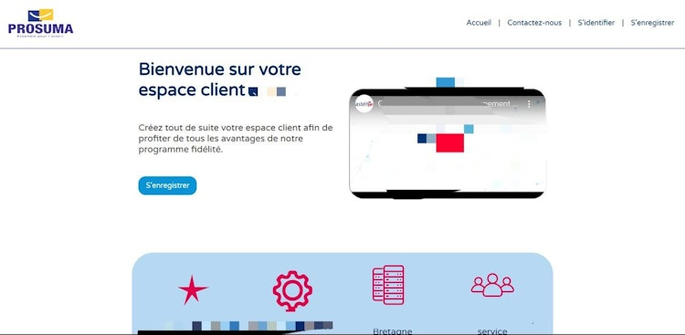
Voir le projet →Solutions de sécurité web
Renforcement de la sécurité des plateformes — bonnes pratiques, durcissement et vérification des accès.
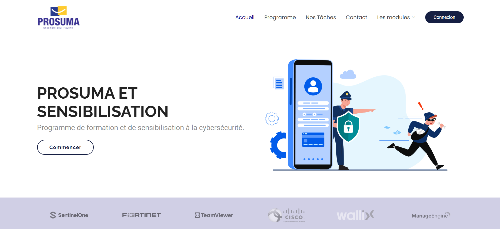
Voir le projet →Déploiement ASTEN & suivi des anomalies
Déploiement sur terrain de la solution ASTEN pour PROSUMA, suivi des anomalies et reporting régulier.
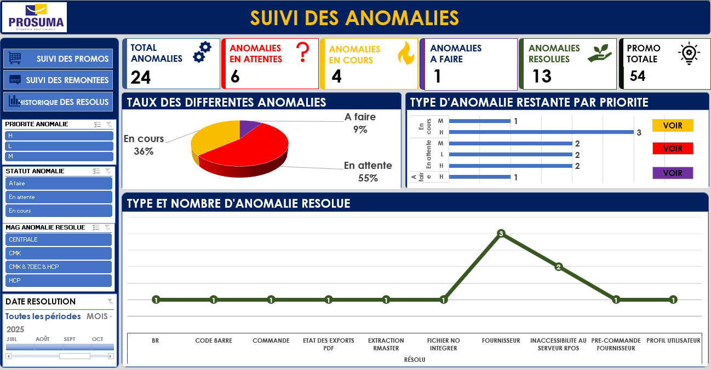
Voir le projet →Plateforme de fidélité PROSUMA
Gestion des cartes de fidélité — suivi des points, encaissement et accompagnement des utilisateurs.
Voir le projet →Campagne de sensibilisation du personnel
Site web de campagne interne — communication et sensibilisation du personnel de PROSUMA.
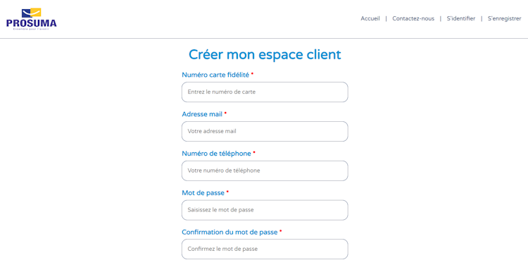
Voir le projet →Développeur Free-lance
Depuis 2020 — applications web sur mesure.
Conception et développement d'applications web.
Maquettes UI/UX et interfaces utilisateur.
Correction de bugs et améliorations digitales.
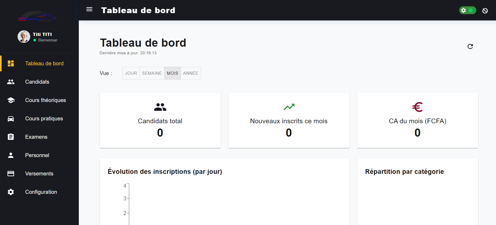
Responsable Opération Junior
7Greens Films Productions — Avr. – Juin 2024.
Élaboration des plannings de production.
Supervision des équipes techniques et artistiques.
Suivi visuel des avancements et gestion des incidents.
Technicien Informatique (Stage)
PROSUMA, Treichville — Juil. 2024 – Mai 2025.
Déploiement et coordination des installations techniques.
Assistance rapide sur les systèmes d'encaissement.
Gestion des incidents avec reporting régulier.
Réalisations
Déploiement sur terrain d'une nouvelle solution « ASTEN » pour PROSUMA
Site Web — Suivi des anomalies suite au déploiement du projet
Assistant Informatique
PROSUMA, Treichville — Depuis Juin 2025.
Support technique et maintenance des systèmes de caisse.
Automatisation des tâches de contrôle des performances.
Formation et accompagnement des utilisateurs.
Réalisations
Plateforme de gestion des cartes de fidélité de PROSUMA
Site Web — Campagne de sensibilisation du personnel de PROSUMA
Certifications & Diplômes
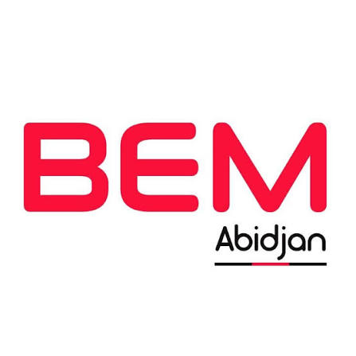
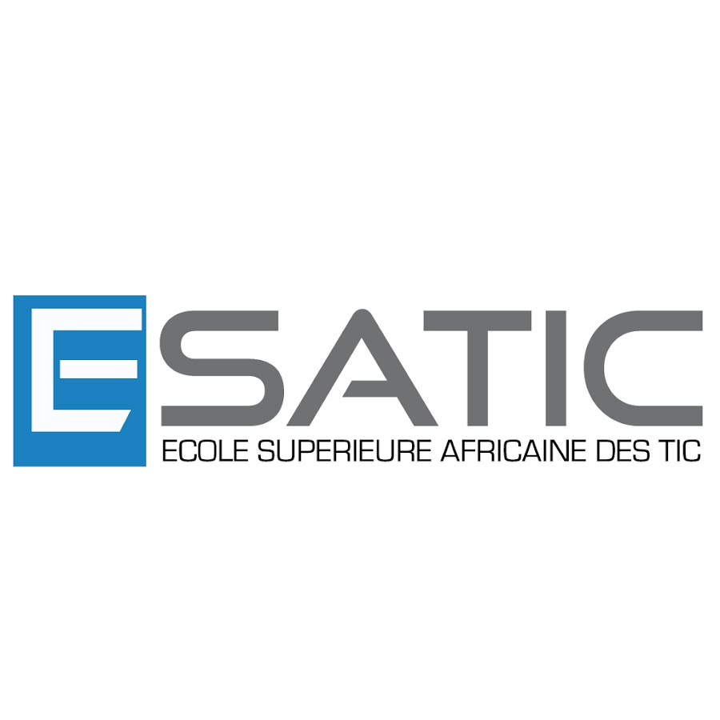
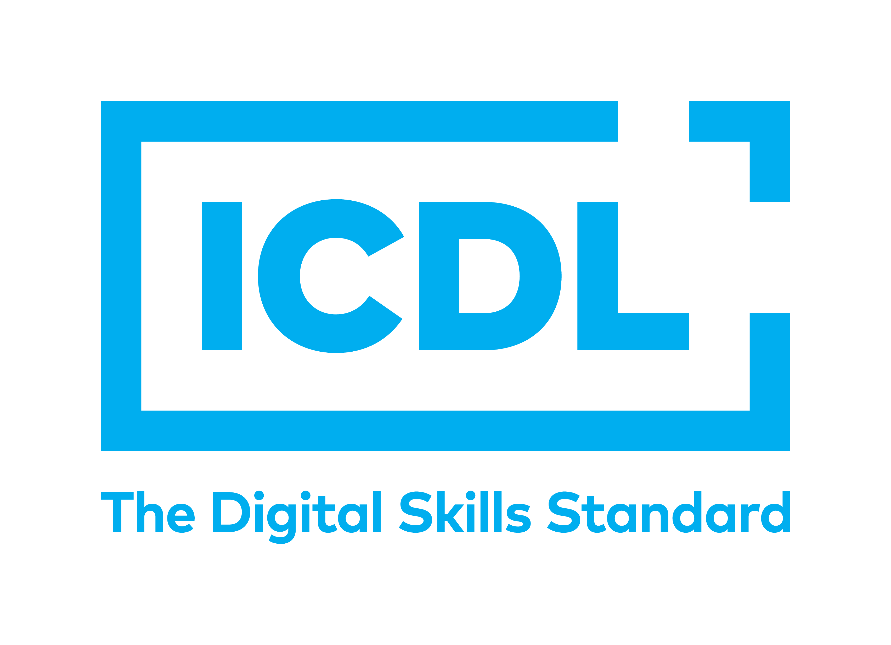
Des questions ?
Parlons-en
Vous hésitez par où commencer ou vous voulez discuter d’une collaboration ? Écrivez-moi, je vous accompagne.